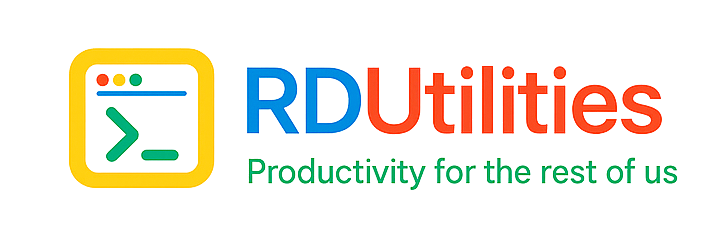

Generate package metadata
Create the correctly formatted JSON and supporting structure for Tanium Deploy.

Windows packaging workflow
An offline software-packaging tool built for Tanium Deploy workflows, helping generate package JSON, supporting files, and install logic outside the Tanium Console.
Product overview
TaniumDeployPackager is aimed at packaging workflows where preparing the metadata, commands, and verification logic offline is more practical or preferred.
Create the correctly formatted JSON and supporting structure for Tanium Deploy.
Help fill out install, update, remove, and detection logic more efficiently.
With an API key, use AI to help analyze binaries and suggest packaging fields.
Screenshots and video
Add screenshots of the package builder, JSON editor, and validation workflow, plus a guided video.
Show the main packaging workflow and fields here.
Use this slot for install commands and verification rules.
Embed a demo showing how a package is built outside the Tanium Console.
Release details
This section is ready for current builds, GitHub release notes, and summaries of new packaging features.
Reserved for the real TaniumDeployPackager download and release pages.